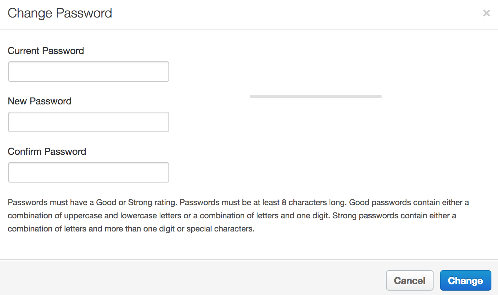

Setting the password hint text in the Edge UI
Edge for Private Cloud v. 4.17.05
By default, when a user changes password in the Edge UI, a dialog box appears that contains fields to set the password and text describing the password requirements:

You can configure the text by setting the conf_apigee-base_apigee.passwordpolicy.pwdhint property in the /opt/apigee/customer/application/ui.properties file.
To set this property:
- Open the ui.properties file in an editor. If the file does not exist, create it::
> vi /opt/apigee/customer/application/ui.properties
- Set conf_apigee-base_apigee.passwordpolicy.pwdhint. For example, set conf_apigee-base_apigee.passwordpolicy.pwdhint as:
conf_apigee-base_apigee.passwordpolicy.pwdhint="Password must be 13 characters long and contain at least on special character."
- Save your changes.
- Restart the Edge UI:
> /opt/apigee/apigee-service/bin/apigee-service edge-ui restart